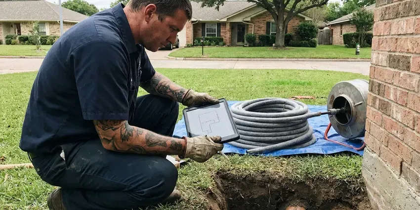

Copper Pipe Leak Repair in Janesville, WI
For dependable copper pipe leak repair in Janesville, WI, HKV Plumbing provides quick and reliable service to protect your home from water damage.
- Licensed Plumbers
- Quick Leak Detection
- Thermal Imaging Leak Detection
- Durable Pipe Repair

Expert Copper Pipe Leak Repair Services in Janesville, WI.
Contact us now for a consultation and protect your property from further water damage.
Your Go-To for Copper Pipe Leak Repair in Janesville, WI
At HKV Plumbing, we understand the challenges copper pipes face in Janesville, WI, including issues related to water chemistry and ground movement. Hard water is common across much of Wisconsin, especially where supply comes from groundwater moving through limestone and dolomite. We offer complete copper pipe leak repair, so your system is fixed right the first time and future problems are prevented.
Our expertise includes:
- Accurate electronic leak detection for copper lines.
- Code-compliant re-piping and section replacement.
- Expert repair for pinhole leaks, corrosion and burst lines.

Additional Plumbing Repair Services in Janesville, WI
We offer expert plumbing repair services across Janesville, WI to stop leaks, clear blockages, and keep every fixture working the way it should.


Customers
Why Choose HKV Plumbing for Copper Pipe Leak Repair in Janesville, WI?
Our commitment to quality service and customer satisfaction sets us apart in Janesville, WI. We make sure every copper pipe leak repair is handled with precision and care, from the first assessment to the final cleanup.
- Local Expertise, Our team understands the plumbing challenges in Janesville, WI, including how water quality affects copper.
- Honest Advice, We tell you when repeated pinholes mean a repipe will save you money.
- Quality Materials, We use only high-grade copper and fittings for repairs, delivering durability and longevity.
Citywide Coverage
Whether you're in the heart of Janesville or on its outskirts, our team is ready to respond promptly to your copper pipe leak emergency. We provide dependable, high-quality service across our entire service area.
Experienced Team
The HKV Plumbing team brings years of specialized experience to every copper pipe leak repair job. Our licensed technicians are experts in diagnosing complex leaks and delivering effective, long-lasting solutions for your plumbing system.
Safety-First Approach
When soldering, we use heat shields, wet rags and a fire extinguisher, and we check the area afterward for any smoldering. In sensitive spots, we use flame-free press fittings in place of solder.
Trusted Certified Janesville Plumbing Services Professionals
At HKV Plumbing, we take pride in providing licensed, certified plumbing services throughout Janesville, WI. Backed by leading industry credentials, our experienced plumbers combine technical skill with genuine customer care. Whether it is repair, installation, or maintenance, we follow strict safety and quality standards to deliver lasting results you can trust.
Call Us Now PHCC Plumbing Contractor Recognition
PHCC Plumbing Contractor Recognition Better Business Bureau (BBB) Accreditation
Better Business Bureau (BBB) Accreditation Angi Certified Pro
Angi Certified Pro ISO 9001 Quality Management Certification
ISO 9001 Quality Management CertificationDependable Copper Pipe Leak Repair Services in Janesville, WI
Copper Pinhole Leak Repair in Janesville
Pinhole leaks are tiny holes that form when the inner wall of copper pipe erodes or pits. They often appear in thin Type M pipe and on hot water lines where velocity and temperature are higher. We cut out the affected section and replace it with new Type L copper or a PEX transition. While the wall is open, we inspect nearby pipe for discoloration or thinning.

Burst Copper Pipe Repair in Janesville, WI
A burst copper pipe is a plumbing emergency that requires immediate attention, especially during hard freezes. Insulating pipes on exterior walls, shutting off outdoor faucets and keeping garages warm help prevent most freeze damage. When temperatures drop significantly, water inside pipes can freeze and expand, causing them to rupture. HKV Plumbing offers fast response for burst copper pipe repair in Janesville, WI, limiting water damage to your home. We quickly isolate the leak, remove the damaged section and replace it with new copper piping, restoring your system to full function and protecting it against future freezes.
Emergency Copper Leak Services in Janesville
Plumbing emergencies don't wait for business hours, and a copper pipe leak can quickly escalate into a major problem. HKV Plumbing provides 24/7 emergency copper pipe leak repair services in Janesville. Whether it's a gushing leak or a steady drip threatening your property, our emergency response team is equipped to handle urgent repairs. We prioritize containing the water damage, making immediate repairs and then planning any necessary follow-up work to restore your plumbing system fully.
Commercial Copper Pipe Leak Repair in Janesville
Commercial properties in Janesville frequently have extensive copper plumbing systems that can suffer from leaks, impacting business operations. HKV Plumbing offers specialized copper pipe leak repair for businesses with minimal downtime and disruption. We understand the demands of commercial plumbing, from larger pipe diameters to complex network layouts. Our experienced technicians provide efficient and reliable repairs, following commercial building codes and schedules to get your business back on track.
Pinhole Leak Repair in Janesville
Pinhole leaks are a common issue with older copper pipes, often caused by corrosion or acidic water. Our technicians in Janesville specialize in accurately locating these small, elusive leaks, which can lead to significant water damage if left alone. We use precise tools to identify the exact spot and then perform a targeted repair, typically cutting out the damaged section and soldering in a new piece of copper pipe. This method creates a strong, lasting seal, preventing future issues in that area.
Underground Copper Pipe Leak Repair in Janesville
Leaking underground copper pipes can lead to serious water loss and foundation issues, especially after heavy rainfall. We use trenchless repair methods where possible to fix or replace damaged underground copper lines, reducing the need for major excavation. This preserves your landscaping and minimizes the overall impact on your property.
Preventive Copper Pipe Inspection in Janesville, WI
Beyond repairs, HKV Plumbing offers preventive inspections for copper piping in Janesville, WI homes. We can identify early signs of corrosion, stress or potential weak points before they turn into costly leaks. This proactive approach helps extend the life of your plumbing system and can save you from unexpected emergency repairs down the line, which is especially important for homes with older copper plumbing.

Solder Joint Leak Repair in Janesville, WI
Older solder joints can fail from poor original workmanship, thermal expansion or vibration. A leaking joint often shows a white or green crust around the fitting. We clean, reheat and resolder the joint or replace the fitting entirely if it is corroded. The result is a clean, fully sweated connection that holds pressure.
Copper Line Leak Repair Near Me in Janesville, WI
When you search for "copper pipe leak repair near me" in Janesville, WI, HKV Plumbing is the go-to local choice. Our proximity allows us to provide rapid response times, so your plumbing emergency is addressed quickly and efficiently. We pride ourselves on being a dependable community partner.
Our team is always on standby, ready to head to any location within the greater Janesville area. We understand the urgency of a pipe leak, and our local presence means we can offer prompt, professional copper pipe leak repair right to your doorstep, minimizing water damage and disruption.
HKV Plumbing at a Glance
- Fully licensed plumbing team covering Janesville, WI
- 24/7 emergency service with same-day scheduling
- Clear written estimates, no hidden fees
- 4.8-star rated by 448+ Wisconsin customers
Janesville Map
Janesville Information
- Population
- 66,102
- Area codes
- 608/920/815
- Service area
- Janesville and communities within 40 miles
- Nearby
- Madison, Waukesha, West Allis, Wauwatosa
For homes in Janesville, WI, where soil conditions and cold snaps can stress plumbing, timely and professional copper pipe leak repair is essential to protect against costly water damage and maintain your property's value. Insulating pipes on exterior walls, shutting off outdoor faucets and keeping garages warm prevent most freeze damage.
Expert Services
Trust our professionals for reliable HKV Plumbing solutions in Janesville, WI.
Our Specialized Plumbing Services in Janesville, WI
At HKV Plumbing, we provide a complete range of plumbing services across Janesville, WI. From leak detection to full system installations, our team ensures fast, precise, and affordable service for both residential and commercial properties. Explore our core services below:


How Our Copper Pipe Leak Repair Process Works in Janesville, WI
We follow a systematic approach to diagnose, repair and verify every copper pipe leak, delivering lasting results for your home.
Request a Quote
Call (414) 432-4641 and tell us where you see water, stains or hear dripping. We will schedule a plumber and help you shut off the water if necessary.
Pinpoint the Leak
We use thermal imaging and moisture meters to locate the leak with minimal openings. Then we give you a clear price for the repair.
Repair and Inspect
We replace the damaged copper with new pipe or press fittings and pressure test the line. We inspect nearby pipe and check pressure and grounding.
Frequently Asked Questions About Copper Pipe Leak Repair in Janesville
Accessible copper leak repairs usually cost $250 to $650. Repairs inside finished walls or ceilings usually range from $500 to $1,500 before drywall patching. Slab leak repairs on copper lines often run $1,500 to $4,000.
Common signs of a copper pipe leak include unexplained wet spots on walls, ceilings or floors, a sudden drop in water pressure, the sound of running water when no fixtures are in use, unusually high water bills or visible blue-green stains on pipes or nearby surfaces that point to corrosion.
PEX resists the corrosion and scale that cause copper pinholes and is flexible and quick to install. If you have repeated copper leaks, repiping with PEX is often a cost-effective long-term solution.
Most standard copper pipe leak repairs, such as fixing a visible pinhole leak or replacing a small section, can be completed within two to four hours. More complex repairs, like those involving slab leaks or extensive re-piping, may take a full day or sometimes multiple days, depending on the scope of work.
While temporary fixes like clamps or epoxy putties exist, professional repair is highly recommended for lasting results. DIY repairs often fail, leading to more significant water damage and costly secondary issues. Licensed plumbers have the expertise, tools and materials for a durable, code-compliant repair that DIY efforts cannot match.
Most accessible repairs take one to two hours. Leaks inside walls or ceilings can take two to four hours, and slab leak repairs may take a whole day.
Copper pipe leaks are commonly caused by corrosion, especially from hard or acidic water. Hard water is common across much of Wisconsin, especially where supply comes from groundwater moving through limestone and dolomite. Other causes include excessive water pressure, improper installation, shifting foundations putting stress on joints and freezing temperatures that can cause pipes to burst. Pinhole leaks are a typical symptom of internal corrosion.
If you discover a copper pipe leak, the first step is to locate and shut off the main water supply to your home to prevent further water damage. Then, contact HKV Plumbing right away at (414) 432-4641 for emergency service. Clear the area of any valuables and begin to collect any standing water.
What People Are Saying About Our Plumbing Experts?

Emily R.
I called HKV Plumbing for plumbing repair, and the technician was fast, polite, and thorough. They explained the problem clearly and fixed it the same day. I will definitely hire them again. Highly recommended!
Plumbing Repair · Waukesha, WI
Patricia H.
We had a slab leak that two other companies could not find. HKV Plumbing located it in under an hour, explained our options, and the price matched the quote to the dollar.
Slab Leak Repair · West Allis, WI
Daniel K.
A pipe burst at 11 pm and they actually answered. The plumber showed up within the hour, shut everything down, and had us back to normal the next morning. Could not ask for more.
Emergency Plumbing · Janesville, WI
Robert G.
The trenchless sewer replacement saved our front yard. They walked us through the camera inspection footage first so we knew exactly what we were paying for.
Sewer Line Replacement · Madison, WI
Sofia M.
Two new toilets installed in one visit, no mess left behind, and the tech even adjusted a faucet he noticed was dripping. Fair pricing and really friendly.
Toilet Installation · Milwaukee, WI
Mark T.
When our office needed drain cleaning, HKV Plumbing provided quick, reliable service. The plumber arrived on time and made sure every drain flowed perfectly before leaving. Very satisfied.
Drain Cleaning · Waukesha, WI